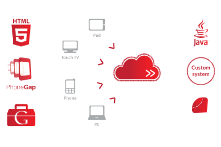
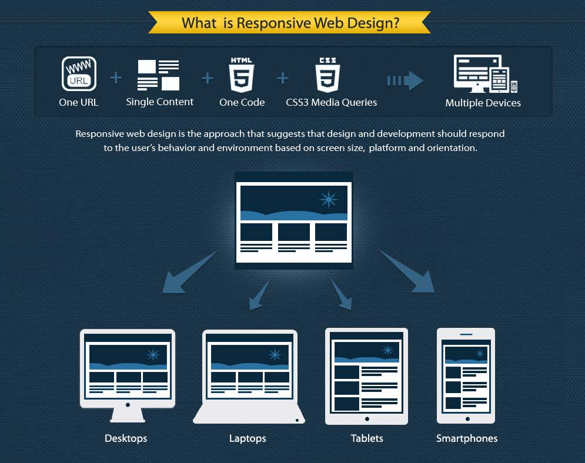
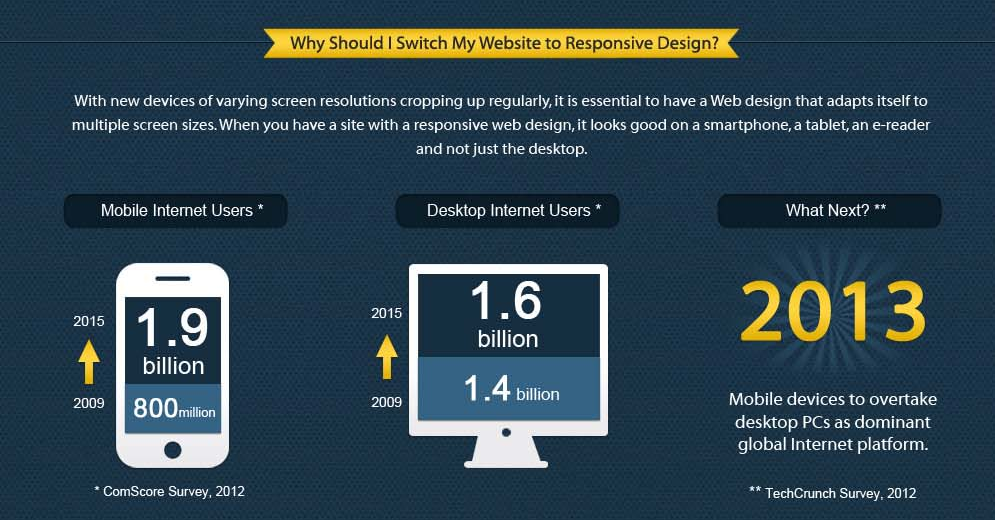
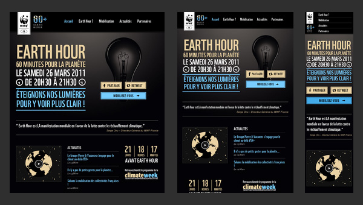
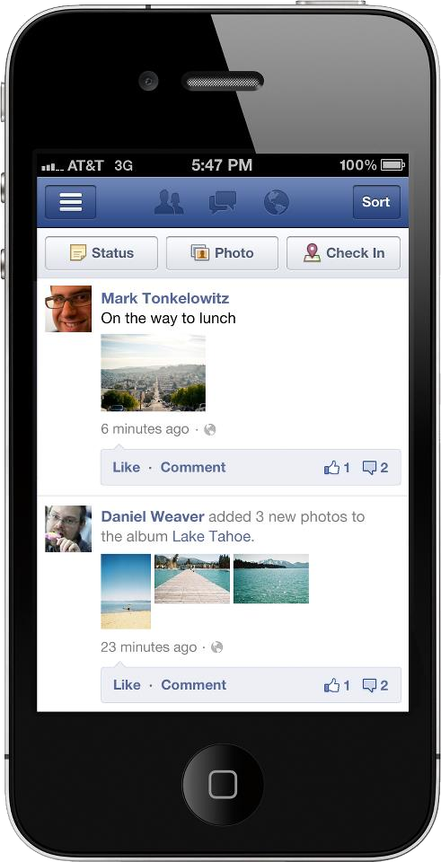
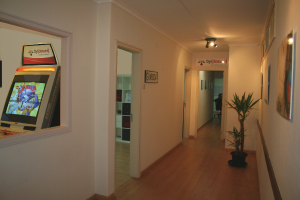

Setup
- Serve the sample project using Apache
- Linux
->/var/www - XAMPP/MAMP
->/htdocs - Download sample project
- Google Chrome
- Localtunnel
- Easy share of localhost server
- Don't have ssh keys? Create NOW
git clone git@github.com:cajadas/workshop-mobile-html5.git
https://github.com/cajadas/workshop-mobile-html5 -> ZIP
ssh-keygen -t rsa -C "your_email@example.com"# Creates a new ssh key using the provided email# Generating public/private rsa key pair.# Enter file in which to save the key.
Manuel Cajada
Software Developer
Work experience:
- Byclosure
- ZAP TV, Happy Vet, Easy Easy Apps
Education:
- IST - MEIC
- Sistemas Distribuídos
Interests:
- Música
- Desenvolvimento de jogos
- Longos passeios na praia (LOL)
- Ornitologia
João Pedro Santos
Designer
Work experience:
- Byclosure
- ZAP TV, Happy Vet, Easy Easy Apps, Museus da Energia, 1Place4u, etc.
Education:
- Design de Equipamento - FBAUL
- Design de Comunicação e Novos Media - FBAUL
Interests:
- Música
- Ilustração
- Gaming
- Comics/BD
Byclosure
Front-end Engineering

Technological Specialization

How we work
Topics
Responsive Web Design
Offline Support
Native look-and-feel
Responsive Web Design
What is it?
Responsive Web Design
Why?
Responsive Web Design
Three Strategies
- Strategy #1: Code well and do nothing special for mobile 
- Pros
- One URL for every device
- Cons
- Complex CSS
- Strategy #2: Make a separate mobile site 
- Pros
- It has proven to be the quickest option
- Enables a different/custom experience
- Cons
- You may need to implement server-side sniffing
Responsive Web Design
Three Strategies
- Strategy #3: An hybrid solution
- Three web pages: 1 for desktops, 1 for tablets & 1 for mobile phones
- Server-side sniffing to identify the device
- Responsive design to support a wider spectrum of mobile devices
- Adopted by Byclosure
Responsive Web Design
How?
Viewport
- Meta tag in the head of the page to control the page's width, height, zoom level, dpis, etc.
<meta name="viewport" content="width=device-width">
CSS Media queries
- Conditional hooks for applying different CSS rules, depending on e.g. browser width, height, orientation, aspect ratio, etc.
@media screen and (min-width: 480px)
and (max-width: 800px) {
body {font-family:"Comic Sans MS", fantasy, cursive;}
}
Responsive Web Design
Exercise
Viewport
- Make page content aware of the device's width
<meta name="viewport" content="width=device-width">
- Keep the page content scaled during orientation change (hint: initial-scale)
<meta name="viewport" content="width=device-width, initial-scale=1">
- Keep the page content unscalable by the user
<meta name="viewport" content="width=device-width, initial-scale=1, user-scalable=no">
Responsive Web Design
Exercise
CSS Media Queries
- Identify iPad portrait media query
@media only screen and (min-width: 768px) and (max-width: 959px) { }
- Use the existing media queries to position the Byclosure logo properly (use padding-right)
@media only screen and (max-width: 1920px) {
.main-title-container img.byclosure-logo { padding-right: 65px; }
}
@media only screen and (min-width: 768px) and (max-width: 959px) {
.main-title-container img.byclosure-logo { padding-right: 15px; }
}
@media only screen and (min-width: 480px) and (max-width: 767px) {
.main-title-container img.byclosure-logo { padding-right: 0px; }
}
@media only screen and (max-width: 479px)
.main-title-container img.byclosure-logo { padding-right: 0px; }
}
Responsive Web Design
Extra References
Offline Support
What is it?
- A set of mechanisms that enable accessing web applications while offline
- Offline web application?
- A list of URLs — HTML, CSS, JavaScript, images, or any other resource
- The home page of the offline web application points the list, called a manifest file
- Reads the list of URLs from the manifest file
- Downloads the resources
- Cache them locally
- Automatically keep the local copies up to date as they change
Offline Support
Why?
- Faster page loading
- Can be used in a transient way
- Optimize bandwidth usage
Offline Support
How?
Application Cache
- A web application static content is cached, and accessible without an internet connection
- http://www.w3.org/TR/offline-webapps/#offline
Web Storage
- A web page can store data locally within the browser
- http://dev.w3.org/html5/webstorage
Web SQL & IndexedDB
- A web page can store data using SQL syntax
- http://www.w3.org/TR/webdatabase (suspended W3C specification)
- http://www.w3.org/TR/IndexedDB/
Offline Support
Application Cache
- Caching of static resources (images, CSS, etc) and executable javascript code
- Storing limits vary between browsers
- Manifest file
- CACHE - Files that will be cached after they are downloaded for the first time
- NETWORK - Files that will never be cached (require a connection to the server)
- FALLBACK - Fallback pages if a page is inaccessible
<!DOCTYPE html>
<html manifest="example.manifest">
...
</html>
Offline Support
Application Cache
CACHE MANIFEST# 2011-07-07:v1/style.css/code.js/image1.jpg/counter_offline.htmlNETWORK:/counter.phpFALLBACK:/counter.php /counter_offline.html
- Exercise
- Based on this example, write a manifest file for the workshop's page to cache the images
- Use '*' on the NETWORK list to garantee the remaining resources are downloaded
Offline Support
Application Cache
- After a successful appcache update, the new code version is not at use until the next page reload
if (window.applicationCache) {
applicationCache.addEventListener('updateready', function() {
if (confirm('An update is available. Reload now?'))
window.location.reload();
});
}
Offline Support
Web Storage
- Synchronous browser API to store data in key/value pairs (key and value must be strings)
- Limited storage (different for each browser)
- Supported in IE 8+, Firefox, Opera, Chrome, and Safari
- Storage Interface
interface Storage {
readonly attribute unsigned long length;
DOMString? key(unsigned long index);
getter DOMString getItem(DOMString key);
setter creator void setItem(DOMString key, DOMString value);
deleter void removeItem(DOMString key);
void clear();
};
Offline Support
Web Storage
- Session Storage
- Exists for the duration of the session
- Each window/tab has access to a distinct storage area (not shared)
- Local Storage
- Presents no expiration date
- Each domain presents an isolated DB
- Respects the Same-Origin Policy
- Exercise
- Add a field 'Description' to Task List
Offline Support
Web SQL
- Asynchronous browser API to store data using SQL(ish) syntax (SQLite)
- Allows storing larger quantities of data than Web Storage
- Available for Opera and Webkit browsers
- All iOS and Android devices use Webkit
- DEPRECATED
- W3C is working on an alternative API: IndexedDB (only available for Chrome, Firefox and IE 10)
Offline Support
Web SQL
- Open database
openDatabase(in DOMString name, in DOMString version,
in DOMString displayName, in unsigned long estimatedSize,
in optional DatabaseCallback creationCallback);
db.transaction(function(t) {
t.executeSql(sqlStatement, arguments, callback, errorCallback);
});
Native look-and-feel
- Tip #1: Do NOT use a back button on your Android Web App layout
- Android devices already present a back button that allows back navigation on the browser
- Does not require keeping navigation history
- Quick Fix
- Sniff the user-agent to detect Android devices
- If the device is running Android, add the class
.androidto the body - Hide back button using CSS
.android .back-button {
visibility : hidden;
}
Native look-and-feel
- Tip #2: Listen to touchStart/End events instead of click events
- iOS devices take 300ms to figure out a click event from touch events
- Multiple 300ms delay periods can became really annoying
- Quick Fix
- Custom tap detection listening to both touchStart and touchEnd events
- Just listening for touchStart may do the trick
- http://cubiq.org/remove-onclick-delay-on-webkit-for-iphone
Native look-and-feel
- Tip #3: Meta-tag your iOS web app
- iOS devices allow adding web pages to the home screen
- Apple custom tags to set properties like:
apple-touch-iconapple-touch-startup-imageapple-mobile-web-app-capable(fullscreen)apple-mobile-web-app-status-bar-style- Some tags are also Android compatible
- Make a huge difference regarding user experience
Native look-and-feel
- Tip #4: Disable tap highlight
- Tap highlight occurs when the browser figures out a click event on a DOM element
- Is a dead giveaway of a non-native app
- Quick Fix
- Make the highlight color transparent using CSS
-webkit-tap-highlight-color:rgba(0,0,0,0);
Native look-and-feel
- Tip #5: Velocity scrolling on iOS
- Several mechanisms nowadays to simulate iOS scrolling behaviour
- Most of them lag the web app by listening to every touch and scroll related events
- Quick Fix
overflow: scroll;
-webkit-overflow-scrolling: touch;
- Introduced on iOS 5
- Still a little buggy
Byclosure Opportunities


Send us your CV or Portfolio to jobs@byclosure.com
Master's Degree Scholarships (remunerated)
- Bachelor/Master's degree in Software Engineering
- Test Automation
- HTML5 for RIAs and multi-device
Summer Internships (remunerated)
- Bachelor/Master's degree in Software Engineering
- Test Automation
- HTML5 for RIAs and multi-device
Agile Software Developer (full-time)
- Bachelor/Master's degree in Software Engineering
- HTML5 for RIAs and multi-device
<Thank You!>
Contact us at:
html5@byclosure.com
g+gplus.to/byclosure
facebookfacebook.com/byclosure
twittertwitter.com/byclosure
wwwbyclosure.com
githubgithub.com/byclosure